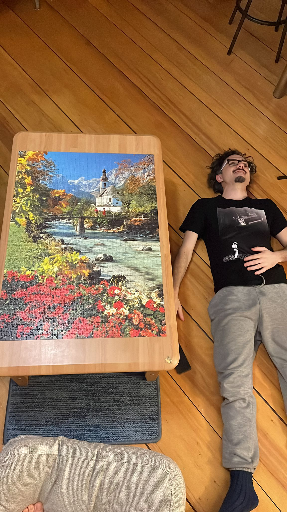
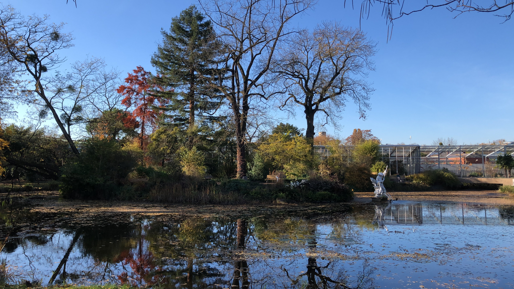
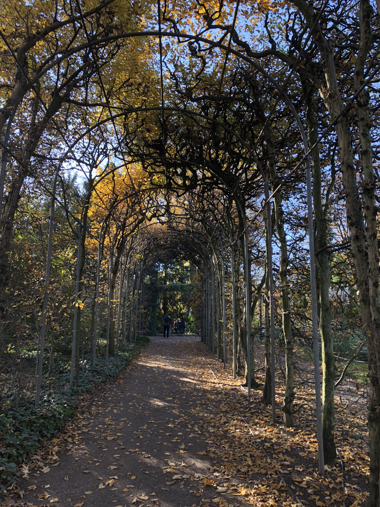
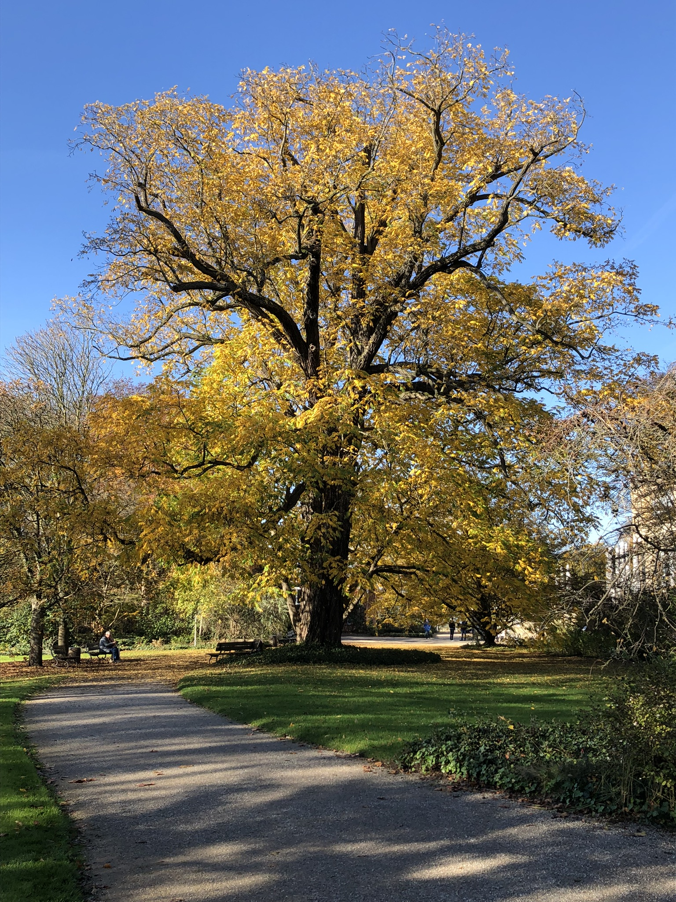
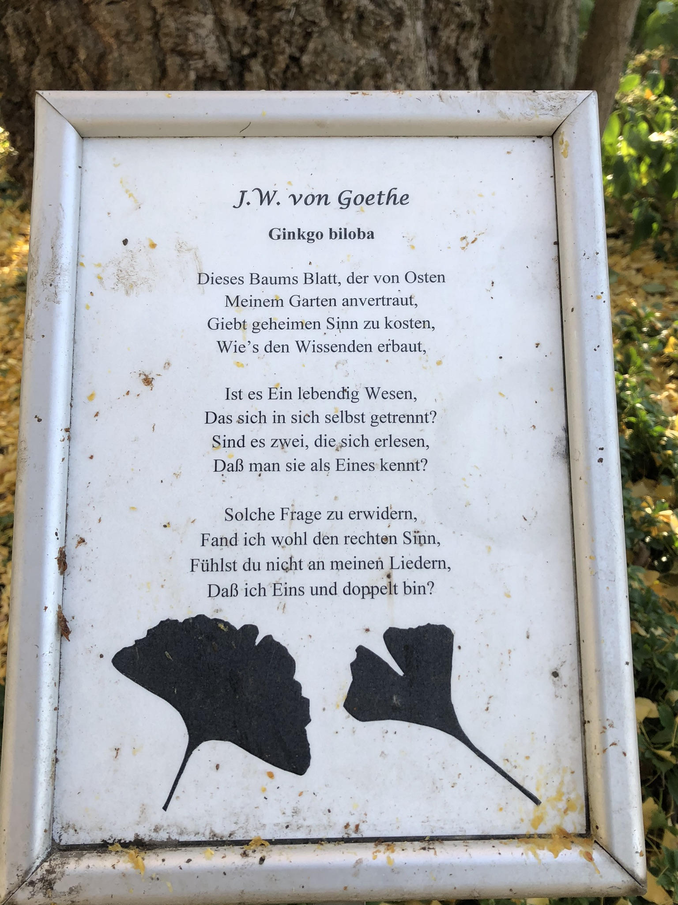
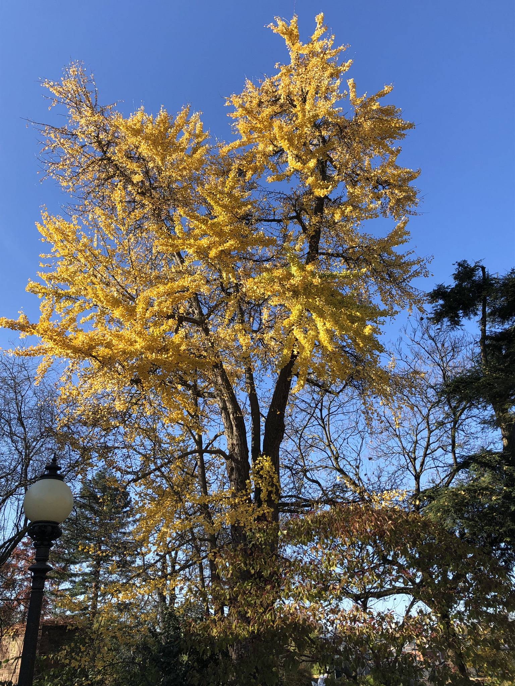
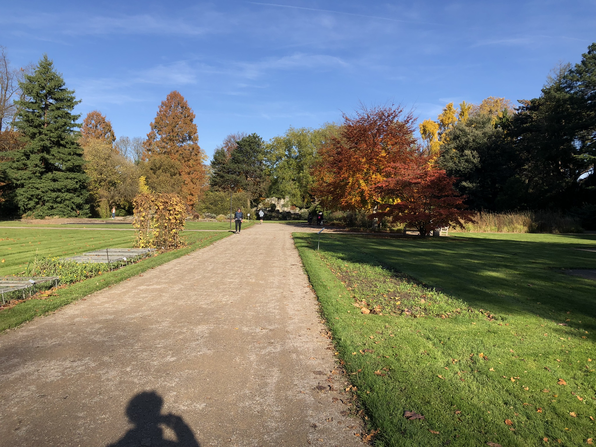
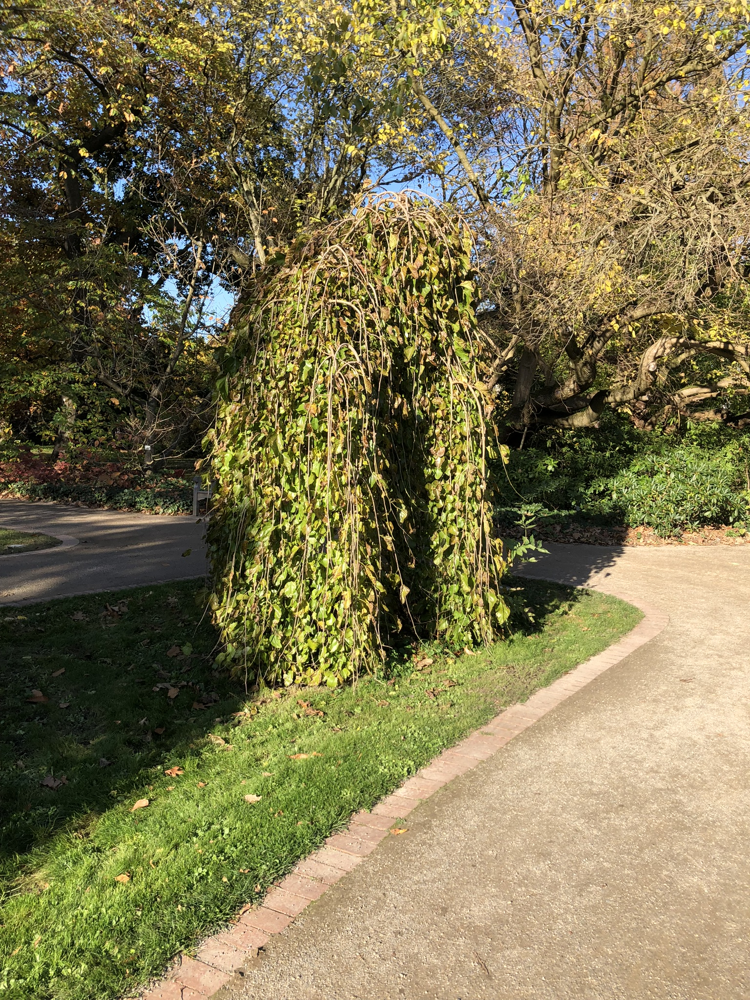
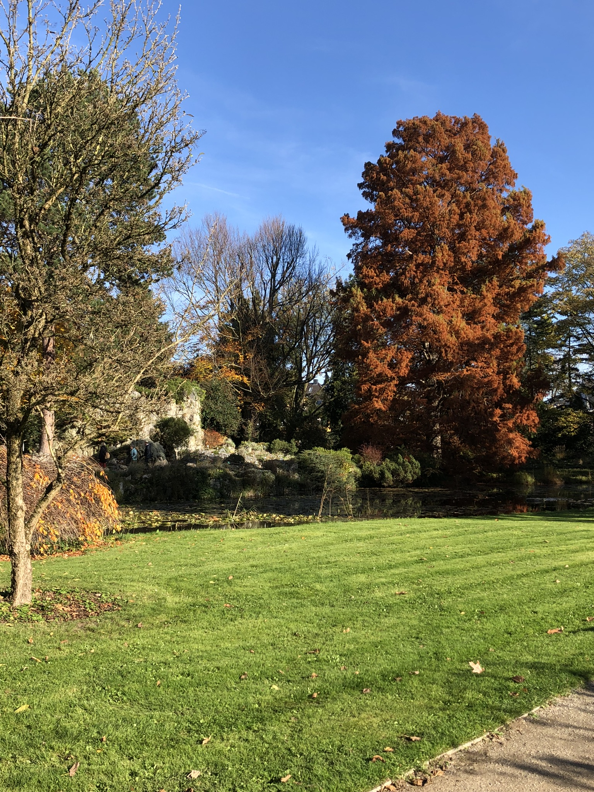
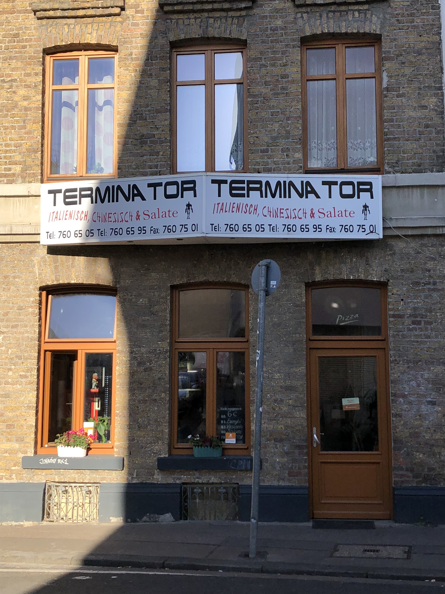

Winter is coming
Pasé semanas enteras pensando: “En estos días subo todo al blog”. También, como diría un pensador contemporáneo fanático de los globos: “Pasaron cosas”.
El semestre en la facultad está arrancandísimo y tengo que meterle a la compo. Resulta que la gente dice “semestre” pero, en realidad, de cursada efectiva hay menos de 4 meses. Además cada semana hay conciertos de todo tipo, eventos en la universidad, workshops y queda poco tiempo para escribir si voy a cada cosa que pasa. Dicho esto, voy con algunas fotos y joyitas de las últimas semanas.
 Vista desde una esquina de la facultad
Vista desde una esquina de la facultad
 Preparación para un concierto de fin de grado de composición
Preparación para un concierto de fin de grado de composición
 “Eingang” es entrada y “Ausgang” salida… hasta para eso tienen que poner un cartel.
“Eingang” es entrada y “Ausgang” salida… hasta para eso tienen que poner un cartel.
Hablando de carteles, vean lo sutiles que son para algunas cosas:

En estos días estuve acomodando la sala pero acá les va una foto de antes de la acomodada:

A algunxs ya les conté, pero un día yendo a la facultad vi un cartel en una galería de arte con una convocatoria a la “Battle of the Shorts”, una competencia de cortos de 1 minuto en el marco del Festival de Cortos de Colonia. Hice algo muy falopa en tono cómico (que pueden ver acá), lo mandé y lo seleccionaron! Me dan un pase de “Filmmaker” para todo el festival, me da mucha gracia… ahora tengo que ir el día de la proyección y jugar una especie de octavos de final con otros 15 cortos en los que tenemos que responder preguntas del público en enfrentamientos 1 vs 1. Un amigo me dijo: “Si hubieras estudiado cine en la ENERC, este sería el logro de tu vida”. Como sea, este fue el set de producción:


Ahora que me dieron el aval con lo del video no me para nadie. Hasta que no me proyecten un bodrio en el BAFICI no paro:
Un domingo fuimos con Gastón (con quien comparto el depto) a un Flohmarkt (mercado de pulgas):

y en un acto completamente impulsivo me compré un rompecabezas de 1500 piezas por 1 euro. Faltaba una pieza…

Unas ganas de hacer un rompecabezas con esta imagen de la casa:

A lo importante: los amigxs.
 Ella es Nevena (se pone en pedo con medio vaso de birra). Es amiga de Julia (la que viene), es de Serbia y terminó el master en compo/arreglos en Jazz hace poquito. Es una masa total y creo que es la persona más frontal que conocí en mi vida.
Ella es Nevena (se pone en pedo con medio vaso de birra). Es amiga de Julia (la que viene), es de Serbia y terminó el master en compo/arreglos en Jazz hace poquito. Es una masa total y creo que es la persona más frontal que conocí en mi vida.
 Julia, LA amiga. Con ella rancheamos mucho, cursamos juntos dos seminarios (sobre electrónica e instrumentación) y estamos yendo a nadar los martes a una pileta y los sábados a otra. La de los martes también tiene pista de patinaje:
Julia, LA amiga. Con ella rancheamos mucho, cursamos juntos dos seminarios (sobre electrónica e instrumentación) y estamos yendo a nadar los martes a una pileta y los sábados a otra. La de los martes también tiene pista de patinaje:
Y la de los sábados es completamente increíble y de repente hay gente tocando música experimental en vivo:
Cuando mi estado emocional es este Julia es la que me banca.
Hay dos amigos más pero no tengo videos de ellos. Uno es Juan Manuel, de Murcia y compañero de mi departamento de la maestría (composición electrónica). Con él pasamos por este bar:
y terminamos cantando un tema de Limp Bizkit en el karaoke de una fiesta de la facultad:
La otra amiga es Amit, una compañera trans de Israel que estudia composición instrumental. No me di cuenta que era trans hasta que me lo dijo, me explotó el cerebro (toma hormonas hace 10 años). Con ella pasamos por este bar lleno de tipos de 50+ y videos de DJs tetonas hechas con IA:
Últimamente me estuvieron mandando fotos de mis enemigos, los dobles que tengo desperdiciados por el continente:

Este parece que vive en Berlin.
 Este vive en los trenes. Se autopercibe “europeo”, sin nación específica.
Este vive en los trenes. Se autopercibe “europeo”, sin nación específica.
Y vamos llegando al final… el clima estos últimos días estuvo lindo pero ya llegó el otoño:
 Ginkgo pasión
Ginkgo pasión
 Arce japonés o Liquidambar, a confirmar
Arce japonés o Liquidambar, a confirmar
 Este parece más Liquidambar
Este parece más Liquidambar


Ayer justo fui a pasear a Flora, un jardín botánico que hay a 20 minutos de casa:




Poema de Goethe al Ginkgo (googleenlo que no lo puedo traducir ni en pedo)
Ginkgo gigante

El árbol del Tío Cosa

Nada mejor que comerse una ensaladita en TERMINATOR.Ahora sí, llegamos a la tirada final de todas las otras fotos que no supe como catalogar:
 La filarmónica de Colonia por tocar la séptima de Mahler (estaba llorando a los 3 minutos del primer movimiento).
La filarmónica de Colonia por tocar la séptima de Mahler (estaba llorando a los 3 minutos del primer movimiento).
 La catedral
La catedral
 Un predicador en la puerta de la catedral. Les diría lo que dice pero por no entender sólo dos palabras no entiendo el sentido de todo lo que dice jaja
Un predicador en la puerta de la catedral. Les diría lo que dice pero por no entender sólo dos palabras no entiendo el sentido de todo lo que dice jaja
 Qué decir
Qué decir

 Un homeless con el bigotito de Hitler que cada vez que lo miraba me sonreía. Tenía que sacarme un moco para justificar la foto.
Un homeless con el bigotito de Hitler que cada vez que lo miraba me sonreía. Tenía que sacarme un moco para justificar la foto.
 El edificio con cara de casco de esgrima
El edificio con cara de casco de esgrima
 El hombre del pijama a cuadros
El hombre del pijama a cuadros
Música para órgano compuesta por un compañero
Chau!